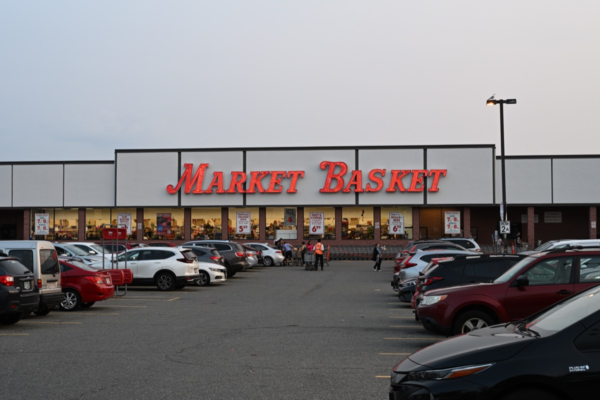
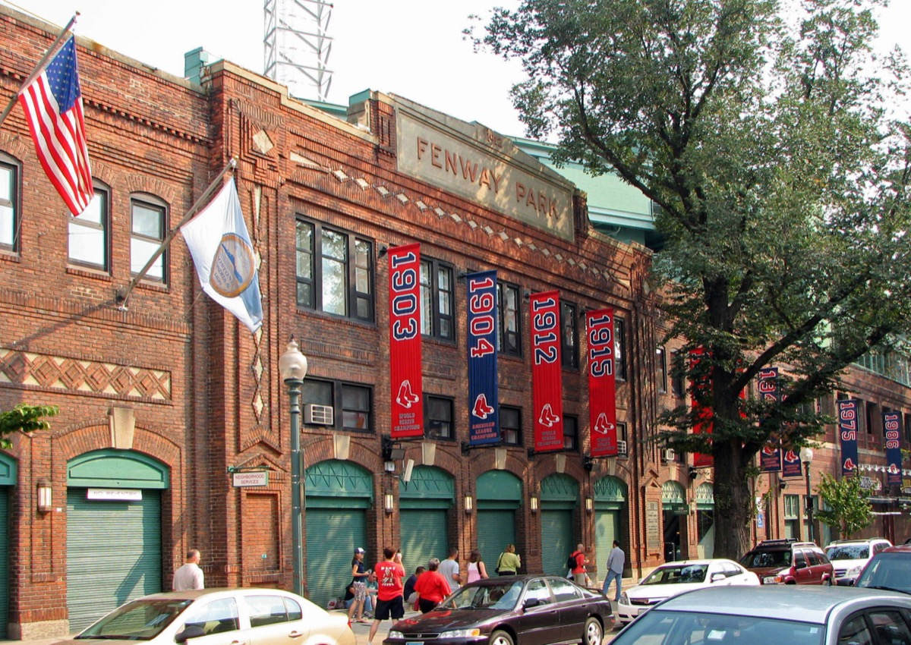
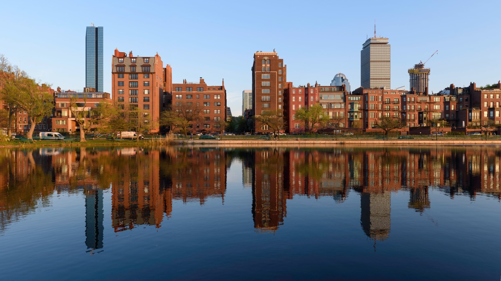

This is the guide we wish someone had handed us at the door. It covers the first 30 days in order: the T, your neighborhood, September 1 moving day, groceries, healthcare, the RMV, parking, winter prep, the things every new Bostonian should do in month one, meeting people, a glossary, and a checklist.
The short answer
The 10 things to do in your first week
01
The T: your CharlieCard and how the subway works
The MBTA runs like the oldest subway in the country, because it is. A few quirks and it's easy.
Get a CharlieCard. Free at the CharlieCard Store inside Downtown Crossing station or at customer service windows in larger stations. Load stored value or a pass, or just tap a contactless card or phone at the gate. A subway ride is $2.40, a bus $1.70, with free transfers.
The lines. Red runs Alewife through Cambridge to Dorchester and Quincy — the line for Harvard, MIT, Kendall. Orange runs Malden through Downtown to JP and Forest Hills. Blue goes under the harbor to East Boston and the airport. Green is light rail with four branches for Fenway, Back Bay, BU and Brookline. The Silver Line is a bus that acts like a subway for the Seaport. "Inbound" means toward Downtown.
Last trains, Commuter Rail and the bus. Last trains leave the center around 12:15–12:45am. The Commuter Rail is a separate zoned fare for Salem, Providence and the suburbs. Bluebikes is often faster than the T for trips under two miles.
02
Boston neighborhoods, explained for newcomers
"Boston" usually means the city plus Cambridge, Somerville and Brookline. Nothing here is cheap.
| Neighborhood | Vibe | Rent tier | T line |
|---|---|---|---|
| Allston / Brighton | Post-grad, loud, roommates, music venues, cheapest way to live near the center | $ | Green B, 66 bus |
| Somerville | Late 20s and 30s, restaurants, breweries | $$ | Red, Green Ext. |
| Cambridge | Grad students, biotech, international | $$$ | Red |
| Harvard Square | Prettier, older, pricier Cambridge | $$$ | Red |
| Fenway / Kenmore | Students, the ballpark, new high-rises | $$ | Green B, C, D |
| Back Bay | Brownstones, Newbury Street, the postcard | $$$$ | Green, Orange |
| Beacon Hill | Gaslamps, cobblestones, tiny apartments | $$$$ | Red, Park St |
| South End | Restaurants, galleries, dog owners | $$$ | Orange |
| South Boston | Post-college professionals, the beach | $$$ | Red |
| Seaport | New, glassy, expensive, finance and biotech | $$$$ | Silver Line |
| North End | Italian, historic, tiny walk-ups | $$$ | Green/Orange |
| Jamaica Plain | Leafy, community-minded, the Arboretum | $$ | Orange |
| Dorchester | Largest and most diverse, varies by block | $ to $$ | Red, Fairmount |
| East Boston | Latin American food, harbor views, the airport | $$ | Blue |
| Charlestown | Historic, quiet, the Navy Yard | $$$ | Orange, ferry |
| Brookline | Its own town: Coolidge Corner, families | $$$ | Green C, D |
03
September 1: moving day and Allston Christmas
Most Boston residential leases start and end on September 1, tied to the academic calendar. Streets around BU, Allston and Mission Hill jam solid, and every year at least one rental truck gets peeled open on the low bridges of Storrow Drive. Do not Storrow.
Allston Christmas is the side effect: curbs fill with couches, desks and lamps people couldn't fit in the truck. Take anything wood or metal; be suspicious of anything upholstered.
Apply for a moving truck permit a couple weeks ahead. Landlords can collect first month, last month, a security deposit and a lock change fee, and nothing else.
04 · Groceries
Groceries: Market Basket, Trader Joe's and Haymarket
Market Basket
400 Somerville AveCheapest full-size store

A family-owned New England chain; the Somerville store is a local institution, famous for produce prices and being mobbed on Sundays.
Trader Joe's, Star Market, Whole Foods
899 Boylston St and others
Trader Joe's for Back Bay, Fenway and Brookline. Star Market and Shaw's are mid-priced. H Mart is the best Asian grocery on the T.
Haymarket
Blackstone StFri & Sat, cash
An open-air produce market running since the 1830s, prices well below any store. Point and let the vendor pick.
05
Healthcare and MassHealth basics
Massachusetts requires residents to have insurance since 2006. If your employer offers coverage, take it. If not, the Massachusetts Health Connector is the marketplace; moving to the state is a qualifying event to enroll within 60 days.
Primary care practices at the big systems have long waits for new patients. Book a "new patient" appointment now, before you're sick, or consider a community health center.
06
The RMV: converting your license
Massachusetts calls it the RMV, not the DMV. New residents should convert an out-of-state license as soon as they establish residency. You need proof of identity, Social Security number, and two proofs of Massachusetts residency, plus the form and fee. Book online first to cut the visit in half.
07
Parking permits and street cleaning
Most residential streets are resident permit only. In Boston it's free but requires Massachusetts registration at your address. From April through November, each street is swept on a fixed day; cars left on it are ticketed and towed. Set a recurring reminder.
08
Winter prep: what to buy
Buy before December: a real winter coat, waterproof boots with grip, a hat, gloves, scarf, a small shovel and ice melt if you have a walkway.
Snow emergencies: parking is banned on designated arteries so plows can get through. Sign up for city text alerts. The "space saver" tradition holds a dug-out spot for 48 hours in Southie and Dorchester.
09 · First-month to-do
The essential first-month to-do list
Five things that make Boston click in the first 30 days, all cheap or free.
Walk the Freedom Trail
Boston Common, 139 Tremont StFree, 2–3 hrs

Follow the red brick line from the Common through Downtown, the North End and over to Charlestown. Learn the geography in one morning.
See a game at Fenway Park
4 Jersey StApril–October

The oldest ballpark in the majors, opened 1912. Cheap standing-room tickets exist for weeknight games. One game in September is a rite of passage.
Take the ferry to the Harbor Islands
Long Wharf NorthSeasonal, May–Oct

Spectacle and Georges Islands are 20–30 minutes by ferry. A Saturday on either shows how much of Boston is water.
Sunset on the Esplanade
Charles River EsplanadeFree

The docks near the Hatch Shell at sunset are where the city feels good about itself. It becomes your default walk.
Dinner in the North End
Hanover & Salem StCash at many places
The oldest residential neighborhood, Italian since the early 1900s. Skip the host outside on Hanover; better rooms are on Salem Street.
10
How to meet people when you're new
Boston is a reserved city with a transient population, and most people who move here alone describe the first few months as lonelier than expected. It is not you. Pick one recurring activity, go every week, and say yes to whatever happens after.
November Project's free Wednesday workout at Harvard Stadium has welcomed newcomers since 2011. Weekly pub trivia will put a solo player on a team if you ask. The full playbook is in how to make friends in Boston.
11
Local vocabulary
| Word | Meaning |
|---|---|
| The T | The MBTA subway, buses and trolleys. Nobody says "the subway." |
| Inbound / outbound | Toward or away from Downtown. |
| Packie | Liquor store, from "package store." |
| Wicked | Very. "Wicked cold." Used sincerely, constantly. |
| The Pike | The Massachusetts Turnpike, I-90. |
| Storrow | Storrow Drive, the riverside parkway with the low bridges. |
| Southie / JP / Eastie / Dot | South Boston, Jamaica Plain, East Boston, Dorchester. |
| Dunks | Dunkin'. There is one every three blocks. |
| Frappe | A milkshake with ice cream in it. |
| Masshole | An aggressive Massachusetts driver. Also self-applied with pride. |
12
The 30-day checklist
| When | Admin | Living |
|---|---|---|
| Days 1–3 | USPS change, utilities, CharlieCard, register to vote | Walk your neighborhood, find your grocery store |
| Days 4–7 | Book RMV, apply for parking permit, city alerts | Esplanade sunset, first trip on each T line |
| Week 2 | Health insurance, primary care, prescriptions transferred | Freedom Trail, North End dinner, one recurring activity |
| Week 3 | Renters insurance, monthly T pass, bank switched | Harbor Islands ferry or a Salem day trip |
| Week 4 | RMV visit done, car registered | Fenway game, a museum, invite one person to one thing |
| Before December | Street cleaning reminder, snow garage located | Winter coat and boots bought |
FAQ
Just moved to Boston: common questions
Do I need a car in Boston?
Not if you live inside the T network. Most people get by with the T, walking, a bike and the occasional rideshare or Zipcar. If your job is in the suburbs, that changes the math.
How does the CharlieCard work?
Free plastic MBTA fare card, available at the CharlieCard Store or station windows. Load stored value or a pass, or tap contactless. Subway $2.40, bus $1.70, free transfers.
What is Allston Christmas?
The nickname for the days around September 1, when Boston's leases turn over at once and curbs fill with furniture people couldn't move. Check for bedbugs before taking anything upholstered.
How long do I have to get a Massachusetts license after moving?
Convert promptly after establishing residency; most people handle it within the first month or two. You need proof of identity, Social Security number and two proofs of residency.
How bad is winter in Boston really?
Colder and windier than expected, real cold January through early March. The city functions through it; the fix is a real coat, waterproof boots and knowing what a snow emergency means.
What should I do in my first month in Boston?
Set up the boring things in weeks one and two, then walk the Freedom Trail, see a Fenway game, ferry to the Harbor Islands, Esplanade sunset and North End dinner. Go to one recurring activity every week.